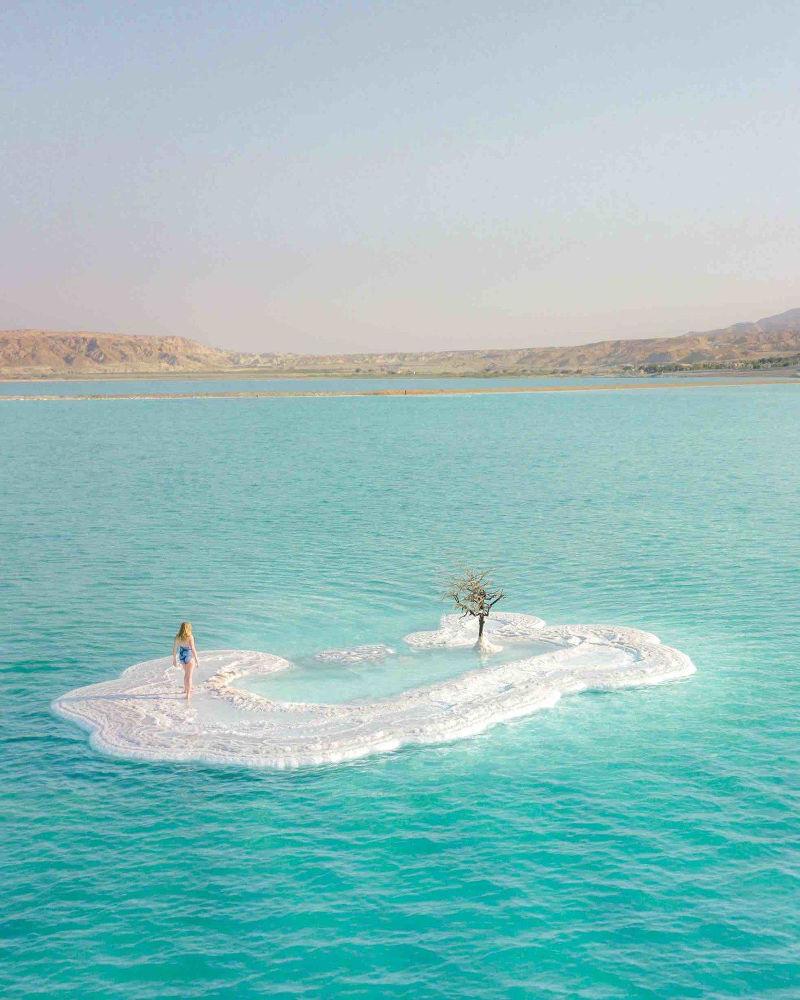
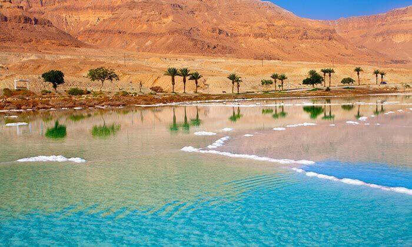

|
 | |
The Dead Sea, known in Hebrew as Yam Ha-Melakh (the Sea of Salt) is the lowest point on earth. It’s surrounded by the stunning landscape of the Negev Desert. The shores of the Dead Sea are the lowest point on the surface of the earth. The saline waters of the lake means no fish can survive in the salty waters, hence the name. The other result of the salty water is their renowned health and healing properties of the mud. You can also float naturally in them. There are tours to the Dead Sea available from across Israel which allow you to experience this yourself. Alternatively, staying at a Dead Sea Hotel provides additional spa and treatment experiences.
